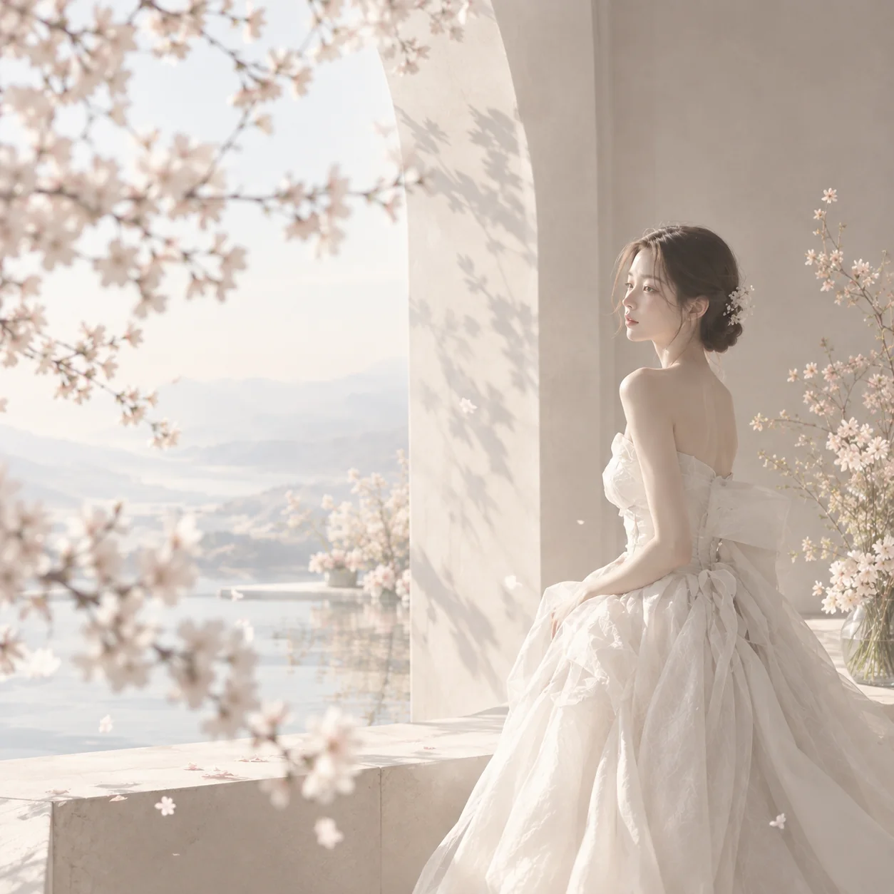

한국적 미감
한복의 선과 여백, 자연에서 만나는 차분한 색을 오늘의 드레스에 담습니다.
OUR STORY
한국의 미와 절제된 미감에서 영감을 받아
현대적인 웨딩과 드레스의 선으로 재해석합니다.

WHY SILUA
실루아는 그 차이에서 시작했습니다. 1:1 퍼스널 컬러와 체형 진단으로 나만의 색과 선을 찾고, 특별한 날의 목적에 맞는 스타일링 컨셉을 함께 제안합니다.
셀프웨딩을 준비하는 20대 후반부터 30대 후반까지의 예비 신부와 연주회·파티·상견례에서 격식과 개성을 함께 원하는 여성을 위해, 고즈넉한 한국의 미를 담은 드레스와 단 하나뿐인 커스텀 소품으로 가장 빛나는 순간을 완성합니다.
OUR POINT OF VIEW
한복의 선과 여백, 자연에서 만나는 차분한 색을 오늘의 드레스에 담습니다.
과한 장식보다 사람의 분위기와 움직임이 오래 남는 실루엣을 선택합니다.
컬러와 체형, 장소와 목적을 함께 살펴 한 사람만의 균형을 완성합니다.
PERSONAL SILHOUETTE
정해진 유행에 사람을 맞추지 않습니다. 먼저 피부의 색과 체형의 균형을 살피고, 드레스와 구두, 헤어 장식과 가방이 한 장면 안에서 자연스럽게 이어지도록 설계합니다.
1:1 진단 예약WHY CHOOSE SILUA
SELECTED WORK

THE SILUA MOMENT
VISIT & CONTACT
드레스 구매와 대여, 1:1 진단과 공방 체험에 관해 편하게 문의해 주세요.